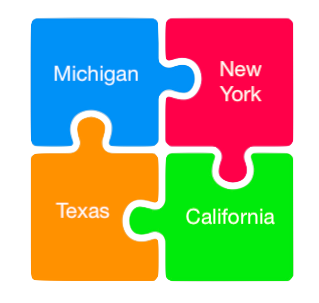

America Reads Schools
America Reads is a national organization. Use this interactive puzzle to access some of the states that have America Reads Programs at their colleges. Click on: California (UCSB), Texas (UT Austin), New York (NYU), or Michigan (uMich).
Below focuses specifically on the America Reads program at the University of Michigan. America Reads Michigan works with a variety of partners, including Ann Arbor Public Schools, Detroit Public Schools, Ypsilanti Community Schools, and Private Tutoring. See the links below for each school that the program is partnered with.
Individual Tutoring
Individual tutoring consists of parents who sign their children up for private sessions. In the new online format that America Reads finds themselves in, the individual tutoring is two tutors per one student. This tutoring is one hour long, and usually twice a week. Students are able to receive personal attention in order to improve their literacy skills.
Individual tutoring consists of parents who sign their children up for private sessions. In the new online format that America Reads finds themselves in, the individual tutoring is two tutors per one student. This tutoring is one hour long, and usually twice a week. Students are able to receive personal attention in order to improve their literacy skills.